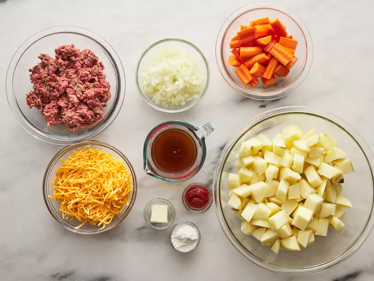
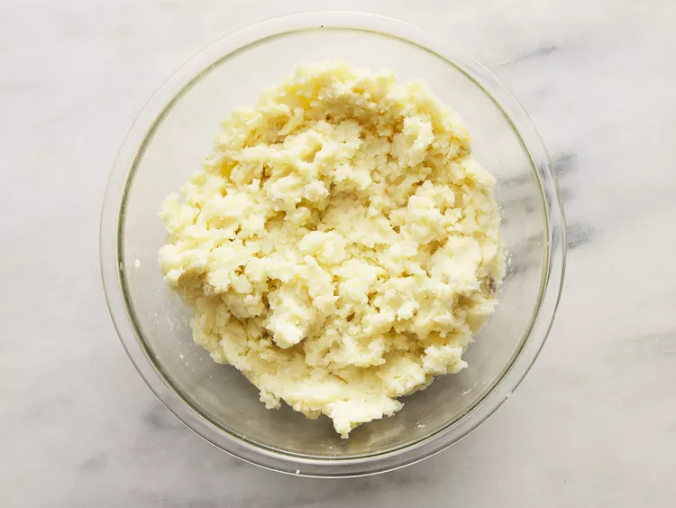
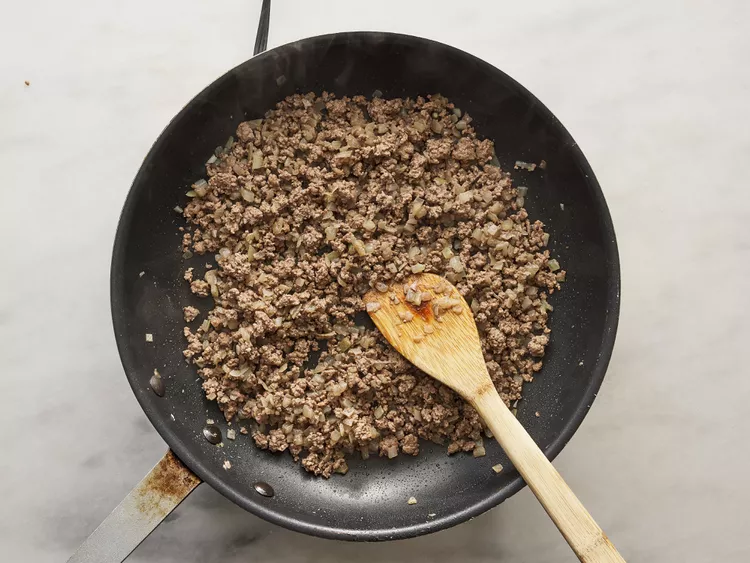
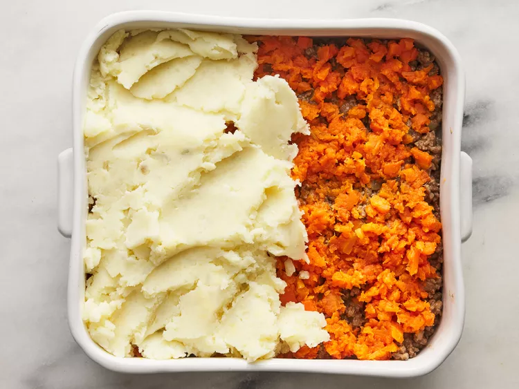

Shepherd's Pie

Shepherd's pie is a comfort food casserole that originated in England. It's traditionally made with minced meat (usually ground lamb), gravy, vegetables, and mashed potatoes.
You may also hear it called "cottage pie." The two terms are used interchangeably, but technically traditional shepherd's pie is made with ground lamb and traditional cottage pie is made with ground beef.
Ingredients
- 4 large potatoes, peeled and cubed
- 1 tablespoon butter
- 1 tablespoon finely chopped onion
- ¼ cup shredded Cheddar cheese
- salt and pepper to taste
- 5 carrots, chopped
- 1 tablespoon vegetable oil
- 1 onion, chopped
- 1 pound lean ground beef
- 2 tablespoons all-purpose flour
- 1 tablespoon ketchup
- ¾ cup beef broth
- ¼ cup shredded Cheddar cheese
Directions
- Gather all Ingredients.

- Bring a large pot of salted water to a boil. Add potatoes and cook until tender but still firm, about 15 minutes. Drain and mash. Mix in butter, finely chopped onion and 1/4 cup shredded cheese. Season with salt and pepper to taste; set aside.

- Bring a large pot of salted water to a boil. Add carrots and cook until tender but still firm, about 15 minutes. Drain, mash and set aside. Preheat oven to 375 degrees F (190 degrees C.)
- Heat oil in a large frying pan. Add onion and cook until clear. Add ground beef and cook until well browned. Pour off excess fat, then stir in flour and cook 1 minute. Add ketchup and beef broth. Bring to a boil, reduce heat and simmer for 5 minutes.

- Spread the ground beef in an even layer on the bottom of a 2 quart casserole dish. Next, spread a layer of mashed carrots. Top with the mashed potato mixture and sprinkle with remaining shredded cheese.

- Bake in the preheated oven for 20 minutes, or until golden brown.